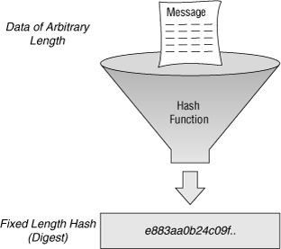

Salted Hashes
Table of Contents
1 Hash Functions
All hash functions map a large domain of values into a much smaller range of values. When two domain values a and b map to the same v in the range, we have a collision. A crypto hash function maps an enormously large domain into a rather small range of values. The well-know crypto hash functions are surprising in that collisions are difficult to exhibit. So, computing the inverse of a hash is considered "computationally infeasible".

Figure 1: Hash Function [source: Web]
On Linux, you will find md5sum, sha1sum, and sha512sum. Below,
we show the results for the word "test" and an .iso file. The output
is in hex-digits, always fixed length, no matter what the length of
input is.
% echo test | md5sum d8e8fca2dc0f896fd7cb4cb0031ba249 -
% echo test | sha1sum 4e1243bd22c66e76c2ba9eddc1f91394e57f9f83 -
% time sha1sum kali-linux-2016.2-amd64.iso 25cc6d53a8bd8886fcb468eb4fbb4cdfac895c65 kali-linux-2016.2-amd64.iso real 0m14.853s, user 0m10.724s, sys 0m1.120s
echo test | sha512sum 0e3e75234abc68f4378a86b3f4b32a198ba301845b0cd6e50106e874345700cc6663a86c1ea125dc5e92be17c98f9a0f85ca9d5f595db2012f7cc3571945c123 -
% time md5sum /var/Public/Software/OSISO/kali-linux-2016.2-amd64.iso real 0m17.120s; user 0m8.500s; sys 0m1.480s 3d163746bc5148e61ad689d94bc263f9;
1.1 Pigeon Hole Principle
The input domain of a crypto hash function is very, very, … large compared to the size of the output range. Thus, it cannot be that for every pair of inputs a and b, hash(a) != hash(b). But, for all the well-known hash functions (such as MD5, SHA1, and SHA512), the world could not discover/ design a and b so that hash(a) == hash(b). (This is called a collision.) Until recently, that is.
MD5 Collision Demo, 2006: The algorithm of Wang and Yu 2005 PDF can be used to create files of arbitrary length that have identical MD5 hashes, and that differ only in 128 bytes somewhere in the middle of the file. Several people have used this technique to create pairs of interesting files with identical MD5 hashes.
SHA1 Collision, News, Feb 2017: 'First ever' SHA-1 hash collision calculated. All it took were five clever brains… and 6,610 years of processor time. GoogleBlog
Both MD5 and SHA1 are broken in that we can algorithmically construct distinct inputs a, b, c, d such that MD5sum(a) = MD5sum(b), and SHA1sum(c) = SHA1sum(d). It is not known (as of 2017) if two inputs x and y can be constructed so that not only (i) MD5sum(x) = MD5sum(y) but also (ii) SHA1sum(x) = SHA1sum(y).
1.2 Hash Types
- http://www.geek-kb.com/how-to-generate-rainbow-tables-using-winrtgen/ has a list. The rest of the article is just a repeat.
2 Salted Hashes
Passwords are never stored in plain text. An "encoded" version is stored. Encoding involves "salting" the password and one-way hashing the result.
The hashed result is then "salted" etc. This is stored in a password "database" file. In cryptography, a salt is random data that is used as an additional input to a one-way function that "hashes" a password. Salting makes it impossible to use lookup tables and rainbow tables to crack a hash.
2.1 Examples
An MD5 password is stored in the /etc/shadow file as
follows. Example lines from machine M1:
student:$1$l67ia9iK$x80ABcEExHYMVpMx.Bls5.:13749:0:99999:7::: jsmith:$1$Y4.kjoQ2$GIuEZcnQVPYi7RPWrQRTE.:14036:0:99999:7::: jtripper:$1$WH2SxqnX$rL0J6JYshB3wl6yBm90Bd1:13887:0:99999:7:::
The encoded password field, between the first and second colons,
contains three dollar signs. Between the first pair of $-symbols is
referred to as the "magic" and is used to determine if this is an MD5
hash crypt id 1 ($1$ means yes, else not). The second pair encloses
( $l67ia9iK$ ) the salt. The characters following the third dollar
upto the colon, namely x80ABcEExHYMVpMx.Bls5. is the salted MD5 hash
of the student's plain text password. This plain text password is not
stored.
2.2 Password Cracking
Password cracking involves: Given this line, student
..., compute the plain text password.
2.3 Password Cracking Stats
Some stats from an MD5Crack Website in 2010: Can crack 5081455
unsalted MD5 hashes/sec. Current time needed to break all passwords
that use [a-zA-Z0-9] and are at most 8 char long is 497 days, and if
we exclude upper case, i.e., [a-z0-9]{1,8} 6 days.
2.4 Current Shadow Files
Since MD5 is now "broken", Linux distributions have moved on to using
salted SHA512 password hashes (crypt id 6, $6$), which are
several orders of magnitude more difficult to brute-force or generate
rainbow tables for. Example lines from machine M2:
root:$6$vPVevCXV$Pj2yIpQhprsMifm7i4X7F6IioqAQxJCyrhNjH4zK0fGYUc2gWjGJjobIwRp7wT5spTlLEywDW0ySmgB0XkVBs/:15401:0:99999:7::: ceg442091:$6$03bKILGu$pgsg2fOTpYyhcPGSaJZfbVEFPgyle5YtGR1wY2ChuxSv7C4lEfdES26qAXa9UHqt04ap5v0AXF0DuWMXdeaWY0:15295:0:99999:7::: ceg235013:$6$T6Yj4GYP$MjioJv3VqkU5WOx5gruV2fSHgitkSHMLvSx5M.KL5JCDsVIVKqf3uo0DGTV.CLar0dW4eV5VYTzbfSi9rA1g8/:15398:0:99999:7:::
The lines below are the same as above, but split into multiple lines for readability.
root:$6$vPVevCXV$Pj2yIpQhprsMifm7i4X7F6IioqAQxJCyrhNjH4zK0fG YUc2gWjGJjobIwRp7wT5spTlLEywDW0ySmgB0XkVBs/:15401:0:99999:7::: ceg442091:$6$03bKILGu$pgsg2fOTpYyhcPGSaJZfbVEFPgyle5YtGR1wY2Ch uxSv7C4lEfdES26qAXa9UHqt04ap5v0AXF0DuWMXdeaWY0:15295:0:99999:7::: ceg235013:$6$T6Yj4GYP$MjioJv3VqkU5WOx5gruV2fSHgitkSHMLvSx5M.KL5JCDs VIVKqf3uo0DGTV.CLar0dW4eV5VYTzbfSi9rA1g8/:15398:0:99999:7:::